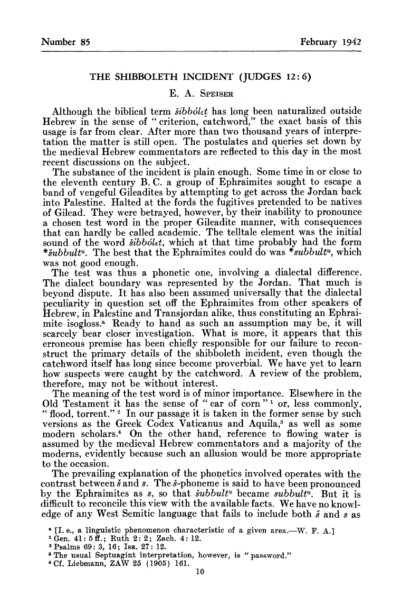

Bulletin of the American Schools of Oriental Research Publication Info

Published by: The American Schools of Oriental Research
Article Stable URL: http://www.jstor.org/stable/1355052
The Shibboleth Incident (Judges 12:6)
Bulletin of the American Schools of Oriental Research
No. 85 (Feb., 1942), pp. 10-13
No. 85 (Feb., 1942), pp. 10-13
Published by: The American Schools of Oriental Research
Article Stable URL: http://www.jstor.org/stable/1355052
The Shibboleth Incident (Judges 12:6)

Bulletin of the American Schools of Oriental Research © 1942 The American Schools of Oriental Research